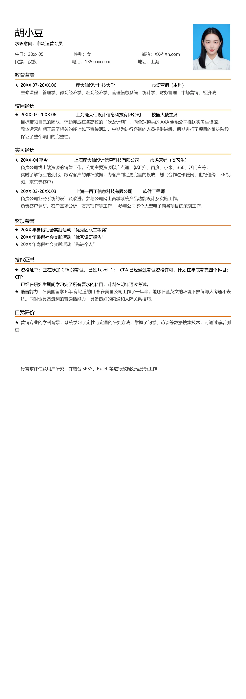

胡小豆
求职意向：市场运营专员
生日：20xx.05 性别：女 邮箱：XX@Xn.com
民簇：汉族 电话：135xxxxxxxx 地址：上海
教育背景
★
20XX.07-20XX.06 鹿大仙设计科技大学 市场营销（本科）
主修课程：管理学、微观经济学、宏观经济学、管理信息系统、统计学、财务管理、市场营销、经济法
校园经历
★
20XX.03-20XX.06 上海鹿大仙设计信息科技有限公司 校园大使主席
目标带领自己的团队，辅助完成在各高校的“伏龙计划”，向全球顶尖的AXA 金融公司推送实习生资源。
整体运营前期开展了相关的线上线下宣传活动，中期为进行咨询的人员提供讲解。后期进行了项目的维护阶段，
保证了整个项目的完整性。
实习经历
★
20XX-04 至今 上海鹿大仙设计信息科技有限公司 市场营销（实习生）
负责公司线上端资源的销售工作，公司主要资源以广点通、智汇推、百度、小米、360、沃门户等；
实时了解行业的变化，跟踪客户的详细数据，为客户制定更完善的投放计划（合作过珍爱网、世纪佳缘、56 视
频、京东等客户）
★
20XX.03-20XX.03 上海一百丁信息科技有限公司 软件工程师
负责公司业务系统的设计及改进，参与公司网上商城系统产品功能设计及实施工作。
负责客户调研、客户需求分析、方案写作等工作， 参与公司多个大型电子商务项目的策划工作。
奖项荣誉
★ 20XX 年暑假社会实践活动“优秀团队二等奖”
★ 20XX 年暑假社会实践活动“优秀调研报告”
★
20XX 年寒假社会实践活动“先进个人”
技能证书
★ 资格证书：正在参加CFA 的考试，已过Level 1； CPA 已经通过考试资格许可，计划在年底考完四个科目；
CFP
已经在研究生期间学习完了所有要求的科目，计划在明年通过考试。
★
语言能力：
在美国留学6 年,有地道的口语,在美国公司工作了一年半，能够在全英文的环境下熟练与人沟通和表
达。同时也具备流利的普通话能力，具备良好的沟通和人际关系技巧。·
自我评价
★
营销专业的学科背景，系统学习了定性与定量的研究方法，掌握了问卷、访谈等数据搜集技术，可通过前后测
进
行需求评估及用户研究，并结合SPSS、Excel 等进行数据处理分析工作；